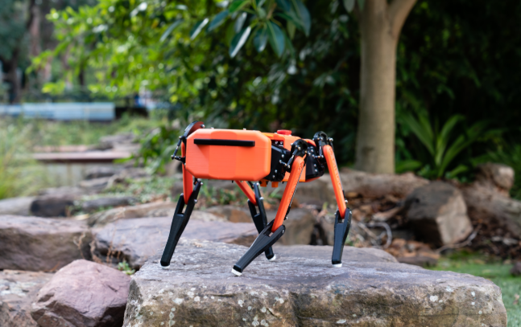
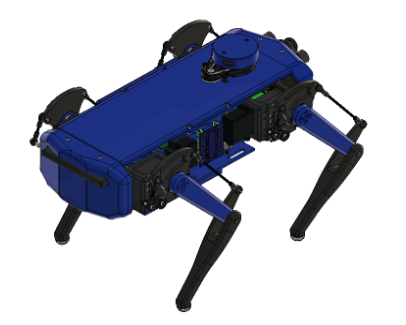

This Alpha Project focuses on replicating and simulating a Dingo-style quadruped robot using Fusion 360, ROS, and Gazebo. Inspired by Clearpath Robotics' Dingo, this simulation demonstrates my understanding of robot kinematics, leg control, and simulation workflows.
This simulation is based on the Yerbert/DingoQuadruped repository, featuring:
/task_space_cmd topic to control foot positionsdingo_description, dingo_control, and dingo_keyboard_controlStudied real-world quadrupeds like Spot and Dingo for leg layout, DOF, and joint strategies.
Created the robot body and articulated legs in Fusion 360. Exported STL files for simulation.
Converted CAD files to URDF/Xacro. Defined links, joints, visual/collision elements, and inertial properties.
Tested the robot inside Gazebo with physics simulation, balance checking, and stability tests.
Implemented task-space control and used the gait engine to coordinate foot positions using Python and ROS topics.
This project helped me develop skills in robotic design, ROS-based control, Xacro structuring, and Gazebo simulation. I plan to extend this project into physical hardware with servos and sensors in the future.